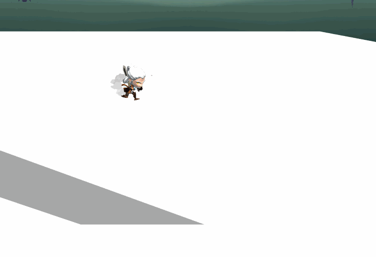

The Witcher: A Bard's Tale
The Witcher: A Bard's Tale is a Beat 'em up and Hack and Slash cooperative adventure game, where the players take the role of Geralt the Rivia and Yennefer of Vengerberg, on their quest to rescue Ciri.
This game was made with my college class for the subject "Project 3" of the Bachelor's Degree in Video Game Design and Development at the UPC. The team was made of 37 students of the 3rd year of university.
I've worked on many projects before this, but this was the first time with such a big team. Coordination was hard and we had very tight deliveries, but overall the game came out amazing and I am really proud of the work we all did.
Also, a very important note, this game was all made with a Game Engine made by us, the students.
My contribution
At the start of the project, I worked on the Animation Module of our Engine, but quickly moved to Gameplay programming, focusing on the Characters.
I believe that I've gained a great amount of experience programming and also working in a big team thanks to this project.
Animation Module
I was responsible for the creation of the Animation Module of the Engine we used for this project with a colleague. My contributions were about importing and saving animation files, deforming the mesh and creating clips out of an animation file for separated use.
Character Movement
For this project I developed the movement of the character. This was done with a Hierarchical State Machine, to allow us better scalability in the future and movement by forces.
I also had to face some problems with movement on slopes, since the character was moving always forward it would think that it was on the air when walking down the slope. To fix that I made the movement vector adapt to the current slope the character was standing in.
I also implemented a way for the character feet to detect what surface it was walking on to play a footstep sound taking in count the material it's made of(stone, sand, wood, etc).

Character Combat
I worked on programming all the inputs and actions the character can do in combat, and all the different features related to the attacks.
Created a combo structure which can chain different attacks based on a simple State Machine on whic each attack is a different node connecting to the other possible attacks of the chain.
Also made a Spell system based on Tags, which allows to create different kinds of spells through JSON by adding tags, which will affect the way that spell behaves in the game
I worked on different small features for all the attacks to improve the feel and flow of the combat like combo interruption and timing, snapping(move and aim) to the enemy target, attack impulse which makes the character move forward based on force, hit freeze, enemy knockback, enemy decapitation, and also impact sound related to surface material it was hit.

Yennefer
I worked designing the character combos with my colleague Alejandro Paris and personally implemented all of her attacks, spells and dodge. The idea was to have two long range combos with low damage and two close range combos with higher damage.
With these sets of combos, we thought that would be a good idea to move the enemy so we could flow between those. So we made one of the long range combos pull the enemy towards Yennefer and one of the close range combos to knock the enemy away.


Relics
I worked on the structure of the Relic System, it was based on Relic Types and Relic Effects, the type indicates if it's going to work on a Dash or an Attack, and then the effect will determine if it's going to be fire(apply burn), ice(apply slow), etc. All of this could be configured through JSON file.
Effects and Stats
The Effects System was designed with scalability in mind, so we could create any type of positive and negative effects, as desired by the Game Designers. To achieve this I created a base Effect class with the ability to modify Stats and have different callbacks based on Events
With this base class I was able to create timed and permanent, positive or negative effects like Burn, Speed Boost or Shielding with ease through JSON file.
Utilities
During the development of the project, the team felt like we needed different types of utility structures so I developed some of them like:
- Game Manager: The Game Manager worked as a way to centralize the structure of the game and ease the access to different parts of the game in the code.
- Particle Pooler: As the performance of the game started to take hits with instantiations, I developed a simple particle pooler which focused on reutilizing the particles and projectiles we would use during the exectuion of the game. Instead of deleting them, we can just disable the unused particles and save it for a later use.
Anim Tween
This was a simple module created with another colleague. It allows different types of transformations of a GameObject such as color, size, position in a set period of time. All of these can have a different type of animation curve to obtain the exact effect required.